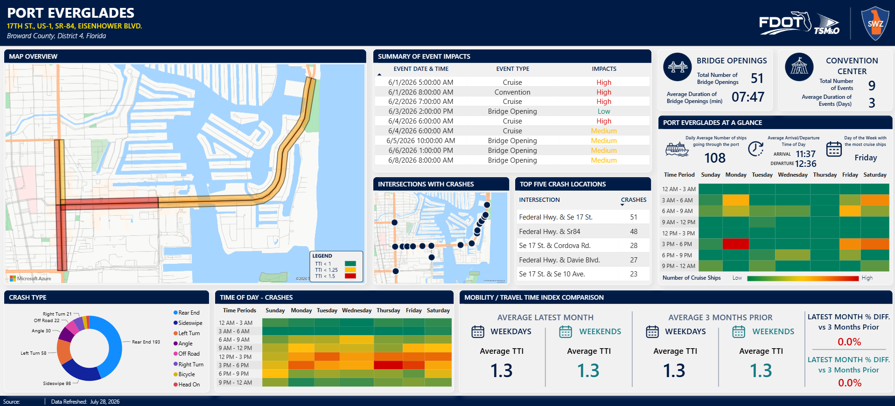

01

Port Everglades Mobility Analysis
An interactive Power BI dashboard designed to evaluate transportation activity surrounding Port Everglades. The analysis combines mobility data with cruise ship activity, bridge openings, convention events, and traffic safety records.